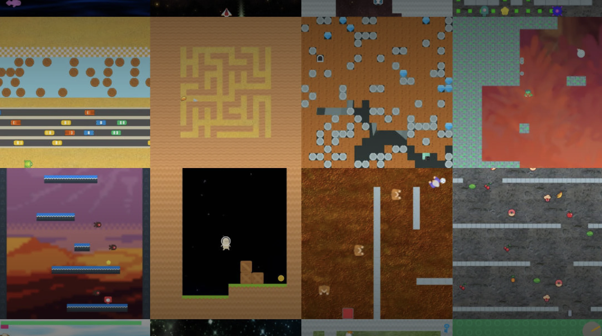

We present Multinet, a comprehensive benchmark designed to evaluate truly generalist models across vision, language, and action domains.
Multinet consolidates diverse, high-quality datasets, establishing standardized evaluation protocols for assessing both the action capabilities of Vision-Language Models (VLMs) and the multimodal understanding of Vision-Language-Action Models (VLAs).
Our benchmark includes carefully curated training data spanning vision-language association (800M+ image-text pairs), language understanding (1.3T tokens), and control tasks (35+ TB of robotics and RL data). We provide evaluation protocols across multiple dimensions, including image captioning, visual question answering, commonsense reasoning, simulated game-playing,and robotic control.
Additionally, we open-source a toolkit that standardizes the challenging process of obtaining and utilizing reinforcement learning and robotics data from various sources.
Through systematic evaluation of state-of-the-art models, we aim to demonstrate significant gaps in current approaches: VLMs struggle with control tasks while VLAs show limited capabilities in pure vision-language understanding.
These findings will highlight the need for more genuinely generalist models. Multinet serves as both a comprehensive evaluation framework and a foundation for developing the next generation of truly generalist AI systems.
A comprehensive benchmark for evaluating Multimodal Action Models
Key contributions include:
Benchmarking Vision, Language, and Action models on Robotics tasks
Key contributions include:
Benchmarking Vision, Language, & Action Models in Procedurally Generated, Open Ended Action Environments
Key contributions include:
Generalizable Extendable Stratified Inference System - A framework for mapping language models to actions
GenESIS structures prompts for action generation using:
Technical blog posts about our research and engineering achievements along the way
Explore our technical blog for key discoveries and engineering achievements from our cutting-edge work in Vision-Language-Action models, action data, and benchmarking.
Multinet v0.2 released! How well do state-of-the-art VLAs and VLMs perform in procedurally generated Out-of-Distribution (OOD) environments? Read more on our v0.2 Release Page.
Multinet v0.1 released! How well do state-of-the-art VLMs and VLAs perform on real-world robotics tasks? Read more on our release Page.
Introducing Multinet! A new generalist benchmark to evaluate Vision-Language & Action models. Learn more here.
@misc{guruprasad2024benchmarking,
author = {Guruprasad, Pranav and Sikka, Harshvardhan and Song, Jaewoo and Wang, Yangyue and Liang, Paul},
title = {Benchmarking Vision, Language, & Action Models on Robotic Learning Tasks},
DOI = {10.20944/preprints202411.0494.v1},
year = {2024},
}